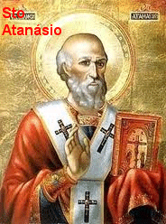

VIDA DE
SANTO ATANÁSIO
E DE
SANTO ANTÃO

"Atanásio é um exemplo edificante para o mundo inteiro, pela grandeza incomensurável de sua fé em DEUS, defendendo a consubstancialidade do VERBO DIVINO com o PAI e lutando tenazmente contra todas as heresias que infestavam a Igreja. Antão, foi um impressionante eremita que soube amar DEUS com ternura e entrega total, modelo singular e admirável para os Monges e Monjas de todos os tempos, e para a humanidade de todas as gerações".
=ÍNDICE=
 - ESCRITOS PELO BISPO ATANÁSIO
- ESCRITOS PELO BISPO ATANÁSIO
 - MENSAGEM + EMAIL +
BUSCAS E LINKS
- MENSAGEM + EMAIL +
BUSCAS E LINKS